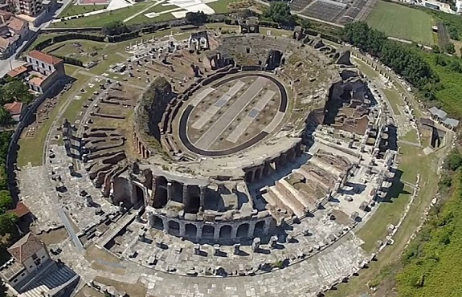
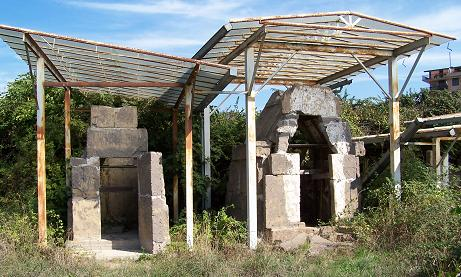
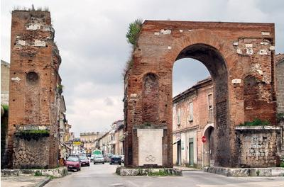

| C A P U A En Santa Maria Capua Vetere, se halla el Anfiteatro Campano y el Museo dei Gladiatori.

Es el segundo anfiteatro más grande después del Coliseo. Fue construido en el siglo I, por orden de Adriano, al sudeste son visibles los restos de la escuela desde la que Espartaco inicio la revuelta.
Junto al teatro se hallan las tumbas de época samnítica.
 También destaca el mitreo de los siglos II-III, decorado con frescos y con bancos para los devotos. Es uno de los pocos existentes en Italia.
No hay que olvidar su museo, el arco de Adriano construido en el siglo II en la antigua vía Apia, las villas y los restos de construcciones hidráulicas.
 Los restos romanos que se pueden visitar en Capua son: Anfiteatro - Domus di Via degli Orti - Arco Adriano - Castellum Aquae - Mitreo - Catabulum - Domus di Via Bonaparte - Museo dell'Antica Capua
|